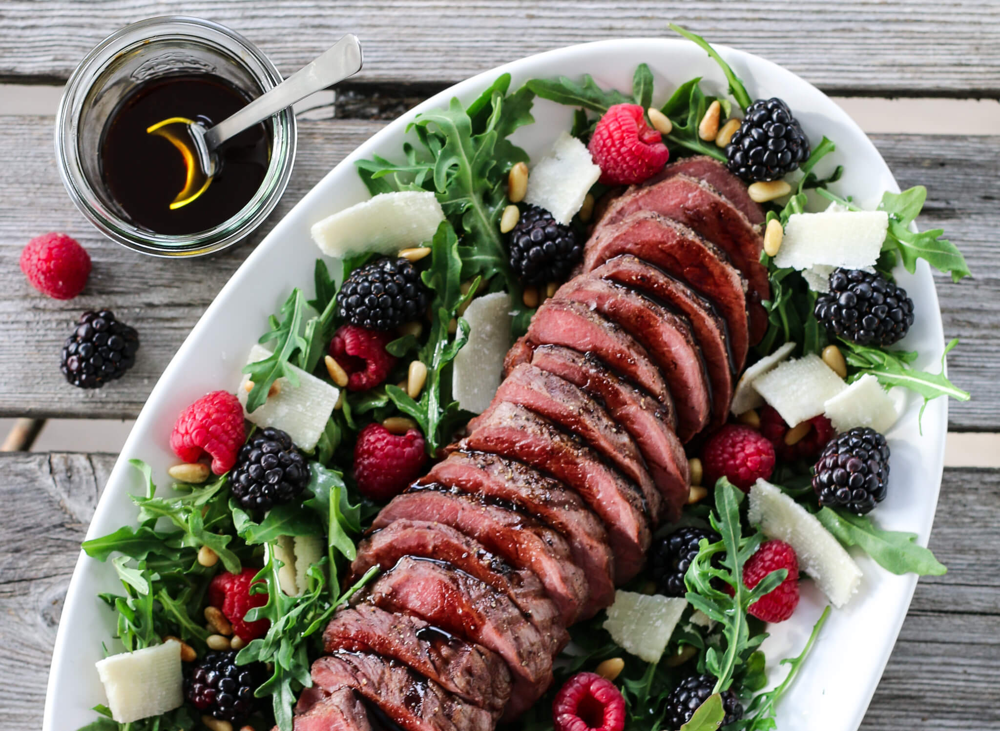

Middag oppskrifter
HELSTEKT INDREFILET MED SOMMERSALAT
Helstekt indrefilet av storfe, servert på en fargerik sommersalat med mange gode smaker og
med en deilig balsamicodressing som dryppes over. Kjøttet kan tilberedes på grillen eller i
stekeovnen, det er opp til deg. En deilig rett å servere på sommerfesten, som hovedrett eller
som en av flere retter på sommerbuffeten.
INGREDIENSER
OKSEFILETEN
600-700 g oksefilet
2-3 ss olivenolje
2 fedd hvitløk, finhakket
2 kvister timian
salt og pepper
SALATEN
150 g ruccula eller annen småbladsalat
100 g bringebær
100 bjørnebær
25 g pinjekjerner, ristet
parmesan, høvlet
DRESSING
6 ss extra virgin olivenolje
3 ss balsamicoeddik , vellagret type
salt og pepper
SLIK GJØR DU
La gjerne kjøttet hvile i romtemperatur en times tid før du skal grille det. Gni kjøttet inn
med olivenolje, salt, pepper, finhakket hvitløk og timian. Grill kjøttet først raskt på en sone
med direkte varme på grillen til det har en fin stekeskorpe over det hele. Legg deretter kjøttet
på indirekte varme, til det har en kjernetemperatur på ca. 56 grader. Snu kjøttet ofte. La kjøttet
hvile i ca. 15 minutter.
Dersom du heller vil steke kjøttet i stekeovnen kan du først steke det raskt i en stekepanne,
til du får en fin stekeskorpe over det hele. Legg deretter kjøttet i en ildfast form og stek det
videre ved 125 grader (over- og undervarme) til du har en kjernetemperatur på ca. 56 grader.
La kjøttet hvile i ca. 15 minutter.
Ha salaten på et stort serveringsfat, og fordel bringebær, bjørnebær og ristede pinjekjerner over.
Rør sammen olivenolje og balsamico, og smak deg frem til en fin balanse mellom smakene.
Smak til med salt og pepper. Ringle ca. halvparten av dressingen over salaten.
Skjær kjøttet i skiver og legg oppå salaten. Fordel litt høvlet parmesan over salaten og server
umiddelbart, med resten av dressingen og gjerne litt focaccia ved siden av.